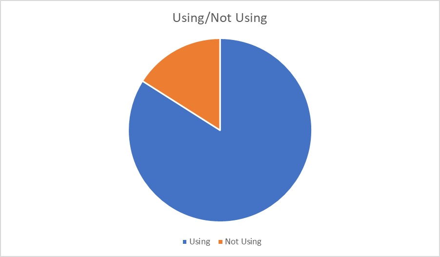

CSP
CONCLUSION
In this project, we have conducted a survey on identification of people who are using social media apps in BV nagar , Nellore.It has been noticed that 84% of people are using social media apps whereas 16% of people are not using social media apps.
INFERENCE
No of people of using Social Media apps: 42
No of people not using Social Media apps: 8
No of people using Instagram: 7
No of people using Youtube: 7
No of people using Whatsapp: 6
No of people using Snapchat: 8
No of people using Telegram: 3
No of people using Google: 5
No of people using Twitter: 3
No of people using Linkedin: 3
No of people using No Apps: 8